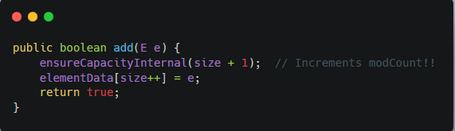
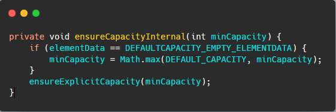
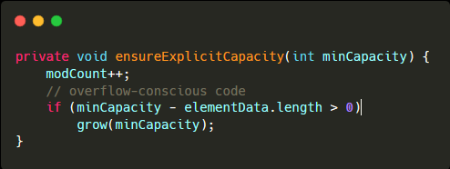
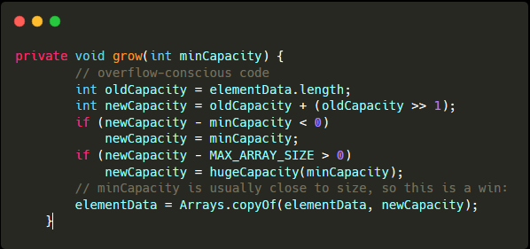
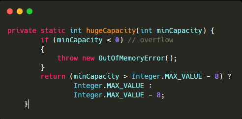

一、基础
ArrayList不是线程安全的，多线程建议使用Vector或者CopyOnWriteArrayList;
底层实现是Object数组。默认容量DEFAULT_CAPACITY为10，最大数组大小MAX_ARRAY_SIZE为Integer.MAX_VALUE-8;
实现了RandomAccess接口，表明可以快速随机访问;
实现了Cloneable接口，表明能被克隆;
实现了Serializabble接口，表明能序列化之后传输;
二、源码方法
构造函数：
无参构造函数ArrayList（），构造一个用于空实例的共享空数组实例
一个int类型参数的构造函数 ArrayList（int initialCapacity）构造一个具有指定初始容量的空列表
一个指定collection的构造函数ArrayList（Collection<？ extends E> c）构造一个包含指定collection的元素的列表，这些元素是按照该collection的迭代器返回它们的顺序排列的
方法：
size()：返回数组大小
isEmpty()：返回数组是否为空
contains(Object o)：返回是否包含某对象
clear()：从此列表中删除所有元素，并且将siz置为0
ensureCapacity(int minCapacity)：将数组容量扩容至指定大小
addAll(Collection<? extends E> c)：将指定集合的所有元素追加到list末尾
removeAll(Collection<?> c)：从此列表中删除包含在其中的所有元素指定的集合
indexOf(Object o)：如果包含则返回指定元素首次出现的索引，不包含则返回-1
lastIndexOf(Object o)：如果包含则返回指定元素最后出现的索引，不包含则返回-1
removeRange(int fromIndex, int toIndex)：从该列表中删除索引在之间的所有元素
trimToSize()：将elementData的数组设置为ArrayList实际的容量，删除动态增长的多余容量
remove(Object o)：从此列表中删除第一次出现的指定元素，删除成功返回true，否正返回false
addAll(int index, Collection<? extends E> c)：从指定位置开始，将指定集合中的所有元素插入到此列表
retainAll(Collection<?> c)：仅保留此列表中包含在指定的集合的元素， 换句话说，从此列表中删除所有未包含在指定集合中的元素
get(int index)、set(int index, E element)、add(E e)、add(int index, E element)、remove(int index)、
三、扩容
ArrayList初始大小为0，在添加第一个元素的时候，调用add方法，进入add方法时，需要先确定容量足以放下这个元素

进入ensureCapacityInternal()方法，传入值为（当前size+1），然后判断当前数组是否为默认的空数组，满足条件，则最小扩容需要值为（当前size+1）和默认容量中较大的一个值。不是默认的空数组，则最小扩容需要值为（当前size+1）大小

然后进入ensureExplicitCapacity()方法，传入最小扩容需要值，然后判断最小扩容需要值和当前对象数组的长度，如果最小扩容需要值大于当前的数组长度，则调用grow()方法进行扩容

扩容时，暂定扩容值大小为原大小+原大小右移一位（偶数的1.5倍，奇数-1的1.5倍），记为newCapacity，然后判断暂定扩容值和最小容量需要值，扩容值两者中较大值。然后再比较扩容值和数组容量最大值，如果超过了数组容量最大值，再进入hugeCapacity()进入特殊处理。

hugeCapacity()方法中，先判断最小扩容需要值是否为负数，是的话，则抛出内存溢出错误。否则判断最小扩容需要值和Integer的最大值-8比较，再确定最终的扩容值，减去的8位存放的是数组的长度

确定了扩容值之后，就进行扩容操作，根据扩容值新建数组，然后拷贝数组，数组拷贝时调用的是本地方法 System.arraycopy() ，在C语言方法中调用frenn()释放了原数组。
总结：
自动扩容不易，在新建ArrayList时，可以指定大小，或者在新增大量元素之前，可以调用ensureCapacity(int minCapacity)方法先手动扩容